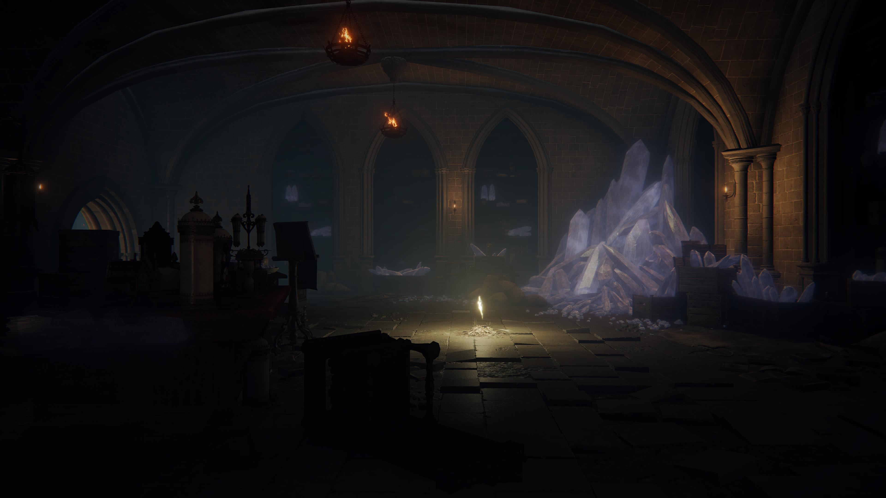
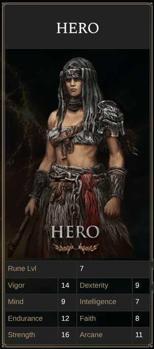
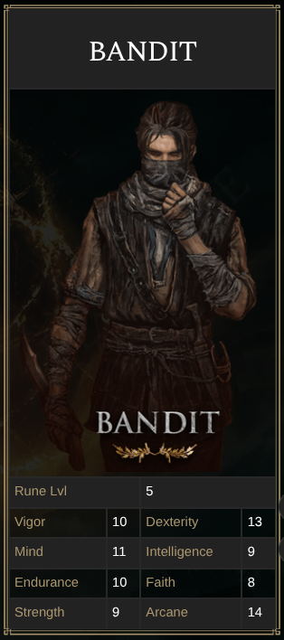
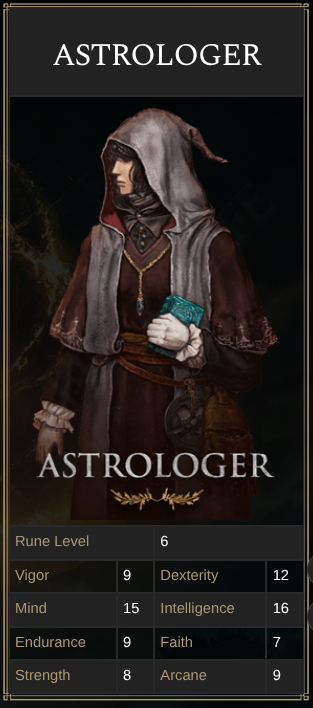
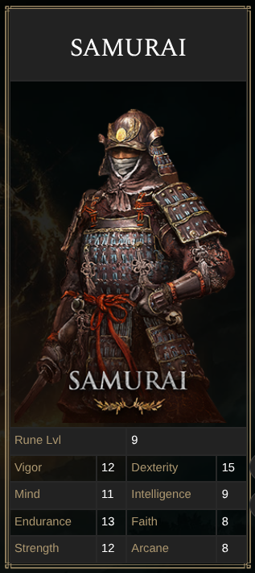
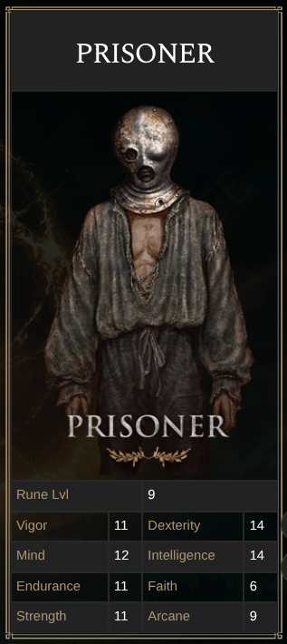
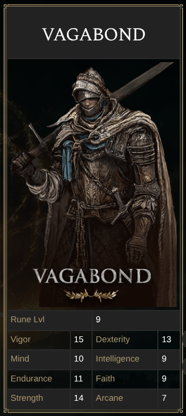
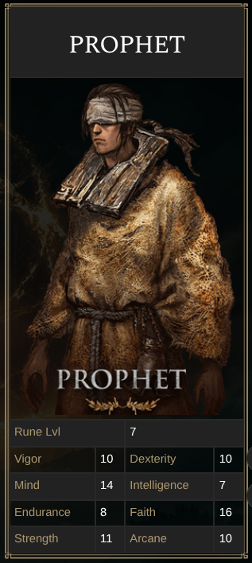
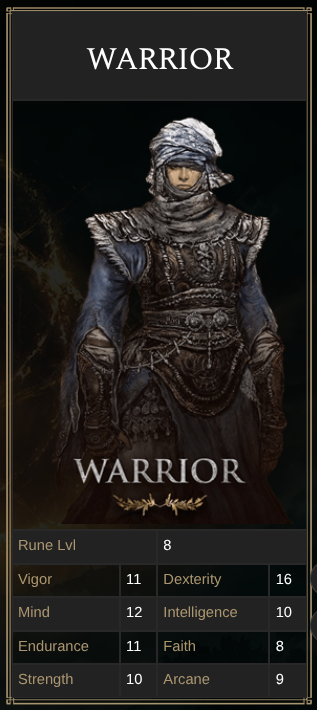
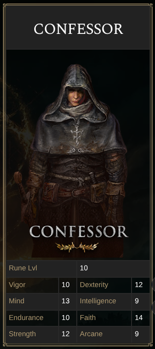

CHOOSE YOUR STARTING CLASS FROM 9 VARIED YET POWERFUL CLASSES AND BECOME THE ELDEN LORD!
Choose your origin and carve
your path through the
Lands Between. From the battle-hardened Vagabond to the bare and unbroken Wretch, each of the ten
starting classes shapes your early journey through the ruins.
Whether you wield sorceries as the Astrologer, strike with precise, bleeding slashes as the Samurai, or
channel sacred incantations as the Prophet, your class is never a limitation.
It is a starting
point.
The legend you forge from then on is entirely your own








